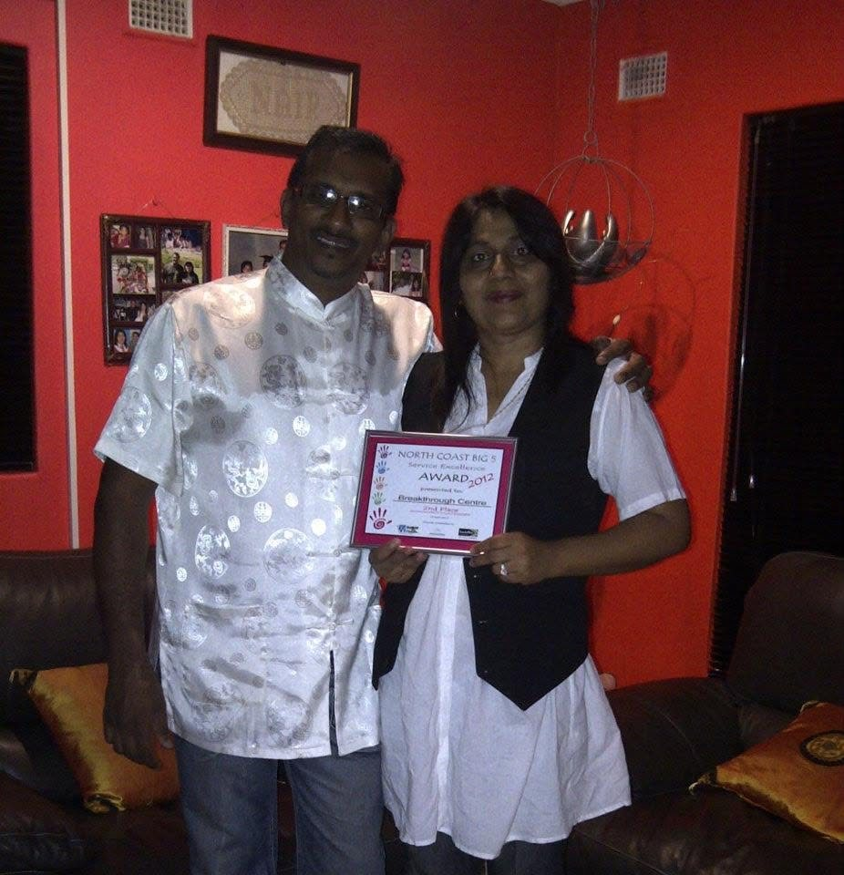
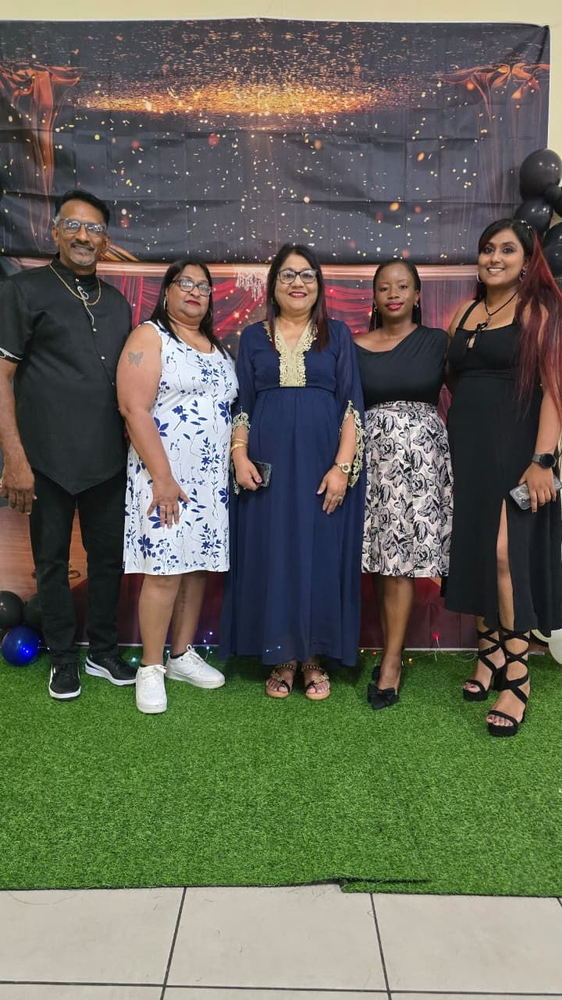
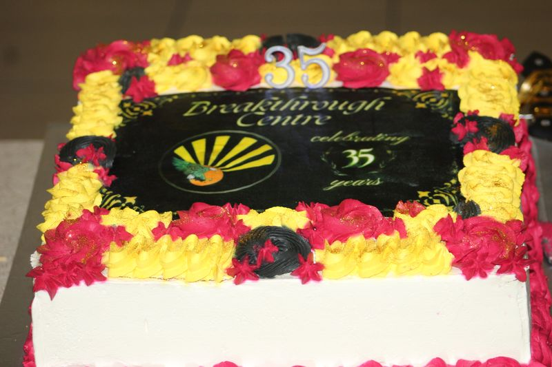
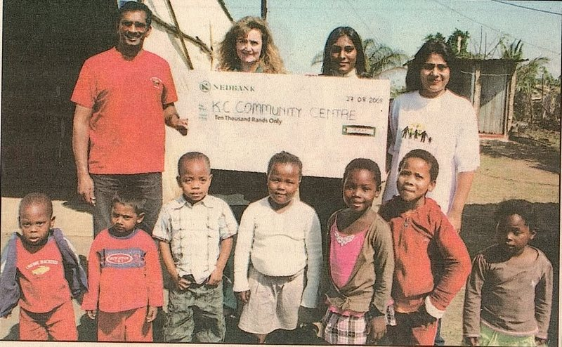
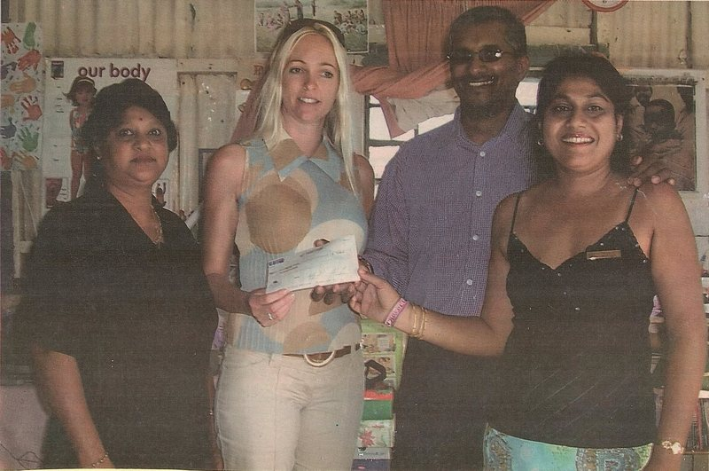
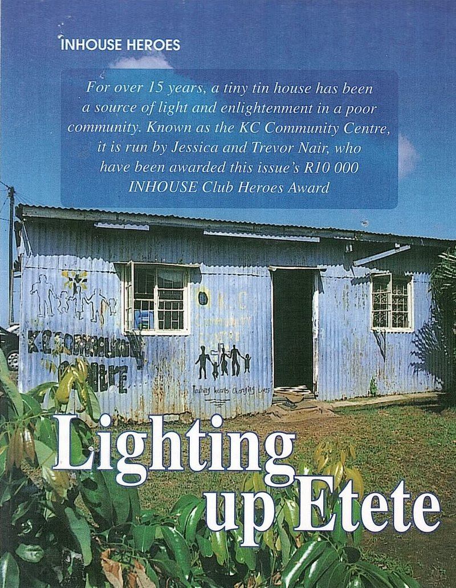

North Coast Big 5 Service Excellence Award
2nd place, Community category, 19 April 2012
Our Sugar Rush Big 5 award, celebrated at home with the certificate in hand.
Breakthrough Centre began on 10 October 1990 as the first community-based project in Etete, Groutville. Thirty-six years on, it's a busy community centre with a special heart for young children.
We started with one simple idea: children and young people need a good place to be, away from the problems on the streets around them. Give them that, plus people who believe in them, and they can rise above hard circumstances.
On 10 October 1990 children of the community began to gather at the Kidz Club in front of a little blue house on a hill in Groutville. Jessica had grown up in that house, and there was very little for young people to do in Etete, so she started a Christian Kidz Club in her mother's garden on Saturday afternoons, with puppets, clowns, songs, games and a lesson.
When Jessica married Ps Trevor in 1994 they moved away for a while, and her sister Shavera kept the club going. In 1999 they came back and took it over again. By then 80 to 90 children were meeting every Saturday at the Radha Roopsingh School, and by 2002 it was up to 250. That year the club was registered as a non-profit organisation, the KC (Kidz Club) Community Centre, and Jessica's mother donated the little blue tin house to be used as the community centre.
That three-roomed tin house became a crèche, a preschool, a community centre and a church, used by about 200 young people every week. The preschool, first called Daddy's Daycare and Pre-school, became Breakthrough Centre Academy. The children kept coming and the club kept growing into the Breakthrough Centre we have today, open to people of every age and background. Read our story in the news.
Breakthrough Centre was founded by Ps. Trevor and Jessica Nair. An Executive Committee steers the organisation, sub-committees run each department and report back to it, and a team of volunteers keeps every programme, event and project running smoothly.

For 36 years Breakthrough Centre has served Etete through setbacks and challenges, and that track record has been recognised by government, business and the media.
Breakthrough Centre was one of the organisations selected when Members of Parliament visited eleven wards in the iLembe District. The Honourable MEC for Transport and Community Safety, Mr Mxolisi Kaunda, saw how a children's club started 28 years earlier had become a multifaceted community centre. Academy learners danced and shared their dreams, and Larry the puppet delivered a serious message with plenty of laughs.
The Office of the Premier invited Breakthrough Centre to represent the iLembe District in reviewing the National Plan of Action priorities for children.
Academy learners welcomed international speakers Dr Jonathan and Helen David to South Africa. The welcome was screened in Malaysia to delegates from 42 countries.

Every award belongs to the children, families, volunteers and friends who have walked this road with us.

2nd place, Community category, 19 April 2012
Our Sugar Rush Big 5 award, celebrated at home with the certificate in hand.

R10 000, August 2008
We put the prize straight back into the children: in 2009 it bought a soccer machine, a pool table and other resources for the Kidz Club.
1st place, Community Development category
Recognised by our own municipality for the difference made in the community.

R10 000, March 2006
Chosen from entries across South Africa, after a Radha Roopsingh Primary teacher nominated Ps Trevor and Jessica as "national heroes".

INHOUSE Club magazine, 2006
"Lighting up Etete" told readers across South Africa about the little blue tin house and the work being done there.
Recognition
Honoured as a Jet Club Icon for our work in the community.
A few snapshots from our family album. The photos move on their own; tap one to see it bigger.
Visit the centre at 170 Old Main Road, Etete, or send us a message.